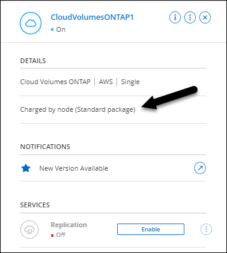

Amazon Web Services の
Amazon Web Services の
 Google Cloud
Google Cloud
 Microsoft Azure
Microsoft Azure
 ドキュメントの変更をリクエスト
ドキュメントの変更をリクエスト GitHub で編集
GitHub で編集 寄稿者向けガイド
寄稿者向けガイド新機能
Cloud Manager の Cloud Volumes ONTAP 管理の新機能について説明します。
このページで説明する機能拡張は、 Cloud Volumes ONTAP の管理を可能にする Cloud Manager の機能に固有のものです。Cloud Volumes ONTAP ソフトウェア自体の新機能については、 "Cloud Volumes ONTAP のリリースノートに移動します"
2022年5月2日
コネクタの3.9.18リリースでは、次の変更が加えられました。
Cloud Volumes ONTAP 9.11.0
Cloud ManagerでCloud Volumes ONTAP 9.11.0の導入と管理が可能になりました。
メディエーターのアップグレードに関する機能拡張
Cloud ManagerによってHAペアのメディエーターがアップグレードされると、ブートディスクを削除する前に新しいメディエーターイメージが使用可能であるかどうかが検証されるようになりました。この変更により、アップグレードプロセスが失敗した場合でもメディエーターは正常に動作し続けることができます。
K8sタブが削除されました
K8sタブは以前のでは廃止されており、現在は削除されています。KubernetesとCloud Volumes ONTAP を併用する場合は、高度なデータ管理のための作業環境として、管理対象- Kubernetesクラスタをキャンバスに追加できます。
Azureの年間契約
EssentialsパッケージとProfessionalパッケージは、年間契約を通じてAzureで利用できるようになりました。年間契約を購入するには、ネットアップの営業担当者にお問い合わせください。この契約は、Azure Marketplaceでのプライベートオファーとして提供されます。
ネットアップがお客様とプライベートオファーを共有したあとは、Azure Marketplaceでの作業環境の作成時にサブスクリプションするときに、年間プランを選択できます。
S3 Glacierのインスタント検索
Amazon S3 Glacier Instant Retrievalストレージクラスに階層化データを格納できるようになりました。
コネクタに新しいAWS権限が必要です
単一のAvailability Zone（AZ；アベイラビリティゾーン）にHAペアを導入する際にAWS分散配置グループを作成するためには、次の権限が必要です。
"ec2:DescribePlacementGroups",
"iam:GetRolePolicy",これらの権限は、Cloud Managerによる配置グループの作成方法を最適化するために必要になります。
Cloud Managerに追加したAWSクレデンシャルの各セットに、これらの権限を必ず付与してください。最新の権限のリストは、で確認できます "Cloud Manager のポリシーのページです"。
新しいGoogle Cloudリージョンサポート
9.10.1リリース以降、Cloud Volumes ONTAP は次のGoogle Cloudリージョンでサポートされるようになりました。
-
デリー（アジア-サウス2）
-
メルボルン（オーストラリア-スモアカス2）
-
Milan（Europe - west8）-シングルノードのみ
-
Santiago（southamerica-west1）-シングルノードのみ
Google Cloudでのn2標準16のサポート
Google CloudのCloud Volumes ONTAP では、9.10.1リリース以降のn2標準-16マシンタイプがサポートされます。
Google Cloudファイアウォールポリシーの機能強化
-
Google CloudでCloud Volumes ONTAP HAペアを作成すると、VPC内の既存のすべてのファイアウォールポリシーがCloud Managerに表示されるようになりました。
以前は、Cloud Managerでは、ターゲットタグのないVPC -1、VPC -2、またはVPC -3のポリシーは表示されませんでした。
-
Google CloudでCloud Volumes ONTAP シングルノードシステムを作成する際に、定義済みのファイアウォールポリシーで、選択したVPC内のトラフィックのみを許可するか（推奨）、すべてのVPC内のトラフィックを許可するかを選択できるようになりました。
Google Cloudサービスアカウントの機能強化
Cloud Volumes ONTAP で使用するGoogle Cloudサービスアカウントを選択すると、Cloud Managerに各サービスアカウントに関連付けられているEメールアドレスが表示されるようになりました。メールアドレスを表示すると、同じ名前を共有するサービスアカウントを区別しやすくなります。

2022 年 4 月 3 日
System Manager のリンクが削除されました
Cloud Volumes ONTAP 作業環境内から以前に利用可能だった System Manager のリンクを削除しました。
Cloud Volumes ONTAP システムに接続している Web ブラウザにクラスタ管理 IP アドレスを入力しても、 System Manager に接続できます。 "System Manager への接続に関する詳細情報"。
WORM ストレージの充電
導入時の特別料金が期限切れになり、 WORM ストレージの使用料が請求されます。WORM ボリュームのプロビジョニング済みの合計容量に基づいて、 1 時間ごとに課金されます。この環境 の新規および既存の Cloud Volumes ONTAP システムです。
2022 年 2 月 27 日
コネクタの3.9.16リリースでは、次の変更が加えられました。
ボリュームウィザードの再設計
特定のアグリゲートに * Advanced allocation * オプションからボリュームを作成するときに、新しいボリューム作成ウィザードを使用できるようになりました。
2022 年 2 月 9 日
市場の最新情報
-
EssentialsパッケージとProfessionalパッケージは、すべてのクラウドプロバイダマーケットプレイスで利用できるようになりました。
容量単位の課金方法では、時間単位での支払いや、年間契約の購入をクラウドプロバイダから直接行うことができます。容量単位のライセンスは、ネットアップから直接購入することもできます。
クラウドマーケットプレイスで既存のサブスクリプションがある場合は、それらの新しいサービスにも自動的にサブスクライブされます。新しい Cloud Volumes ONTAP 作業環境の導入時に、容量単位の課金を選択できます。
新規のお客様の場合、 Cloud Manager は新しい作業環境の作成時に登録を求めるプロンプトを表示します。
-
すべてのクラウドプロバイダマーケットプレイスからのノード単位のライセンスが廃止され、新しいユーザには提供されなくなりました。これには、年間契約と時間単位のサブスクリプション（ Explore 、 Standard 、 Premium ）が含まれます。
この充電方法は、有効なサブスクリプションをお持ちの既存のお客様には引き続きご利用いただけます。
2022 年 2 月 6 日
未割り当ての Exchange ライセンス
Cloud Volumes ONTAP 用の未割り当てのノードベースライセンスがあり、使用していない場合は、そのライセンスを Cloud Backup ライセンス、 Cloud Data Sense ライセンス、 Cloud Tiering ライセンスに変換してライセンスを交換できるようになりました。
この操作により、 Cloud Volumes ONTAP ライセンスが取り消され、同じ有効期限のサービスに対してドル相当のライセンスが作成されます。
2022 年 1 月 30 日
コネクタの3.9.15リリースでは、次の変更が加えられました。
ライセンスの選択を再設計
新しい Cloud Volumes ONTAP 作業環境を作成する際に、ライセンス選択画面を再設計しました。この変更は、 2021 年 7 月に導入された容量別課金方法と、クラウドプロバイダマーケットプレイスを通じて提供される予定のサービスを反映しています。
デジタルウォレットの更新
Cloud Volumes ONTAP ライセンスを 1 つのタブに統合し、 * デジタルウォレット * を更新しました。
ネットアップアカウントあたり 20 システム
Cloud Volumes ONTAP システムの最大数は、使用しているライセンスモデルに関係なく、ネットアップアカウントあたり 20 に制限されます。
a_system_に は、 HA ペアまたはシングルノードシステムを指定します。たとえば、 2 つの Cloud Volumes ONTAP HA ペアと 2 つのシングルノードシステムがある場合、合計 4 つのシステムがあり、アカウントに 16 のシステムを追加で配置できます。
ご質問がある場合は、アカウント担当者または営業チームにお問い合わせください。
2022 年 1 月 2 日
コネクタの3.9.14リリースでは、次の変更が加えられました。
追加のAzure VMタイプがサポートされます
Cloud Volumes ONTAP は、 9.10.1 リリース以降、 Microsoft Azure で次の VM タイプでサポートされるようになりました。
-
E4ds_v4
-
E8ds_v4
-
E32ds_v4
-
E48ds_v4
にアクセスします "Cloud Volumes ONTAP リリースノート" サポートされる構成の詳細については、を参照してください。
FlexClone による課金の更新
を使用する場合 "容量単位のライセンスです" Cloud Volumes ONTAP については、 FlexClone ボリュームで使用される容量の追加料金は発生しません。
充電方法が表示されます
Cloud Volumes ONTAP ワーク環境ごとの充電方法がキャンバスの右側のパネルに表示されるようになりました。

ユーザ名を選択します
Cloud Volumes ONTAP 作業環境を作成する際に、デフォルトの admin ユーザ名ではなく、優先ユーザ名を入力できるようになりました。

ボリューム作成の機能拡張
ボリューム作成機能がいくつか強化されました。
-
使いやすいようにボリューム作成ウィザードの設計が変更されました。
-
ボリュームに追加するタグがアプリケーションテンプレートサービスに関連付けられ、リソースの管理を整理して簡単にすることができます。
-
これで、 NFS 用のカスタムエクスポートポリシーを選択できるようになりました。

2021 年 11 月 28 日
コネクタの3.9.13リリースでは、次の変更が加えられました。
Cloud Volumes ONTAP 9.10.1
Cloud Manager で Cloud Volumes ONTAP 9.10.1 の導入と管理が可能になりました。
Keystone Flex サブスクリプション
Keystone Flex Subscriptions を使用して、 Cloud Volumes ONTAP HA ペアの料金を支払うことができるようになりました。
Keystone Flex サブスクリプションは、成長に合わせて購入できるサブスクリプションベースのサービスです。 OPEX 消費モデルを希望するお客様に、設備投資やリースを先に行うお客様にシームレスなハイブリッドクラウドエクスペリエンスを提供します。
Keystone Flex サブスクリプションは、 Cloud Manager から導入可能なすべての新しいバージョンの Cloud Volumes ONTAP でサポートされます。
AWS リージョンが新たにサポートされるようになり
Cloud Volumes ONTAP は、 AWS アジア太平洋（大阪）リージョン（ AP-F北東 -3 ）でサポートされるようになりました。
ポート削減
Azure の Cloud Volumes ONTAP システムでは、シングルノードシステムと HA ペアの両方に対してポート 8023 と 49000 が開かれなくなりました。
これにより、 Cloud Volumes ONTAP の _new_環境 システムが、 3.9.13 リリース以降のコネクタから変更されます。
2021 年 10 月 4 日
コネクタの3.9.11リリースでは、次の変更が加えられました。
Cloud Volumes ONTAP 9.10.0
Cloud Manager で Cloud Volumes ONTAP 9.10.0 の導入と管理が可能になりました。
2021 年 9 月 2 日
コネクタの3.9.10リリースでは、次の変更が加えられました。
Azure のお客様が管理する暗号化キー
データは、を使用して Azure の Cloud Volumes ONTAP で自動的に暗号化されます "Azure Storage Service Encryption の略" Microsoft が管理するキーを使用する場合：ただし、次の手順を実行する代わりに、お客様が管理する独自の暗号化キーを使用できるようになりました。
-
Azure で、キーヴォールトを作成し、そのヴォールトでキーを生成します。
-
Cloud Manager から、 API を使用して、キーを使用する Cloud Volumes ONTAP 作業環境を作成します。
2021 年 7 月 7 日
3.9.8リリースのコネクタには、次の変更が加えられています。
新しい充電方法
Cloud Volumes ONTAP では、新しい充電方法を利用できます。
-
* 容量ベースの BYOL * ：容量ベースのライセンスでは、 TiB あたりの Cloud Volumes ONTAP 料金を支払うことができます。このライセンスはネットアップアカウントに関連付けられており、ライセンスで十分な容量が確保されていれば、複数の Cloud Volumes ONTAP システムを作成できるようになっています。容量ベースのライセンスは、 Essentials_or_Professional のいずれかのパッケージ形式で提供されます。
-
* Freemium offering * ： Freemium により、ネットアップのすべての Cloud Volumes ONTAP 機能を無償で使用できます（クラウドプロバイダの料金は引き続き適用されます）。システムあたりのプロビジョニング可能な容量は 500 GiB に制限されており、サポート契約はありません。最大 10 個の Freemium システムを使用できます。
以下に、充電方法の例を示します。

一般的に使用できる WORM ストレージ
Write Once 、 Read Many （ WORM ）ストレージはプレビューではなくなり、 Cloud Volumes ONTAP で一般的に使用できるようになりました。 "WORM ストレージの詳細については、こちらをご覧ください。"。
AWS で m5dn.24xlarge をサポートしています
9.9.1 リリース以降、 Cloud Volumes ONTAP では m5dn.24xlarge インスタンスタイプがサポートされるようになりました。課金方式は PAYGO Premium 、 Bring Your Own License （ BYOL ；お客様所有のライセンスを使用）、 Freemium です。
既存の Azure リソースグループを選択します
Azure で Cloud Volumes ONTAP システムを作成する際に、 VM とその関連リソースに対して既存のリソースグループを選択できるようになりました。

導入に失敗したり削除したりした場合、 Cloud Manager は次の権限を使用してリソースグループから Cloud Volumes ONTAP リソースを削除します。
"Microsoft.Network/privateEndpoints/delete",
"Microsoft.Compute/availabilitySets/delete",Cloud Manager に追加した Azure クレデンシャルの各セットに、これらの権限を必ず付与してください。最新の権限のリストは、で確認できます "Cloud Manager のポリシーのページです"。
Blob パブリックアクセスが Azure で無効になりました
セキュリティの強化として、 Cloud Volumes ONTAP 用のストレージアカウントの作成時に Cloud Manager で * Blob パブリックアクセス * が無効になるようになりました。
Azure Private Link の機能強化
デフォルトで、 Cloud Manager は、新しい Cloud Volumes ONTAP システムのブート診断ストレージアカウントで Azure Private Link 接続を有効にするようになりました。
つまり、 Cloud Volumes ONTAP の _all_storage アカウントでプライベートリンクが使用されるようになります。
Google Cloud 内の分散型の永続的ディスク
9.9.1 リリース以降、 Cloud Volumes ONTAP では Balanced Persistent Disk （ pd-bBalanced ）がサポートされるようになりました。
この SSD は、 GiB あたりの IOPS を下げて、パフォーマンスとコストのバランスを取ります。
Custom-4-16384 は Google Cloud でサポートされなくなりました
新しい Cloud Volumes ONTAP システムでは、 custom-4-16384 マシンタイプはサポートされなくなりました。
このタイプのマシンで既存のシステムを実行している場合は、引き続き使用できますが、 n2 標準 -4 マシンタイプに切り替えることをお勧めします。
2021年5月30日
コネクタの3.9.7リリースでは、次の変更が加えられました。
AWS での新しいプロフェッショナルパッケージ
新しいプロフェッショナルパッケージでは、 AWS Marketplace で毎年契約を締結し、 Cloud Volumes ONTAP と Cloud Backup Service をバンドルできます。支払いは TiB あたりです。このサブスクリプションでは、オンプレミスのデータをバックアップすることはできません。
この支払いオプションを選択すると、 EBS ディスクを介して Cloud Volumes ONTAP システムあたり最大 2PiB をプロビジョニングし、 S3 オブジェクトストレージ（シングルノードまたは HA ）に階層化することができます。
にアクセスします "AWS Marketplace のページ" 価格の詳細を表示するには、を参照してください "Cloud Volumes ONTAP リリースノート" このライセンスオプションの詳細については、を参照してください。
AWS の EBS ボリュームでタグを使用します
新しい Cloud Volumes ONTAP 作業環境の作成時に、 Cloud Manager によって EBS ボリュームにタグが追加されるようになりました。タグは、 Cloud Volumes ONTAP の導入後に作成されたものです。
この変更は、サービス制御ポリシー（ SCP ）を使用して権限を管理する場合に役立ちます。
auto 階層化ポリシーの最小クーリング期間
auto 階層化ポリシーを使用してボリュームのデータ階層化を有効にした場合、 API を使用して最小クーリング期間を調整できるようになりました。
カスタムエクスポートポリシーの機能拡張
新しい NFS ボリュームを作成すると、カスタムのエクスポートポリシーが昇順に表示されるようになり、必要なエクスポートポリシーが簡単に見つかります。
古いクラウド Snapshot の削除
Cloud Volumes ONTAP システムの導入時および電源をオフにするたびに作成されたルートディスクとブートディスクの古いクラウド Snapshot が Cloud Manager で削除されるようになりました。ルートボリュームとブートボリュームの両方に対して最新の 2 つの Snapshot のみが保持されます。
この機能拡張により、不要になった Snapshot を削除することでクラウドプロバイダのコストを削減できます。
Azure スナップショットを削除するには、 Connector で新しい権限が必要になることに注意してください。 "Azure の最新の Cloud Manager ポリシーを表示します"。
"Microsoft.Compute/snapshots/delete"2021 年 5 月 24 日
Cloud Volumes ONTAP 9.9.1
Cloud Volumes ONTAP 9.9.9..1. を導入および管理できるようになりました。
2021 年 4 月 11 日
コネクタの3.9.5リリースでは、次の変更が加えられました。
論理スペースのレポート
Cloud Manager で、 Cloud Volumes ONTAP 用に作成した最初の Storage VM の論理スペースのレポートを有効にするようになりました。
スペースが論理的に報告されると、 ONTAP は、 Storage Efficiency 機能で削減されたすべての物理スペースが使用済みと報告するようにボリュームスペースを報告します。
AWS で GP3 ディスクがサポートされます
Cloud Volumes ONTAP では、 9.7 リリース以降、 _General Purpose SSD （ GP3 ） _disks がサポートされるようになりました。GP3 ディスクは、幅広いワークロードのコストとパフォーマンスのバランスが取れた、最も低コストの SSD です。
コールド HDD ディスクは AWS ではサポートされなくなりました
Cloud Volumes ONTAP はコールド HDD （ sc1 ）ディスクをサポートしなくなりました。
TLS 1.2 を使用して Azure ストレージアカウントを作成します
Cloud Manager が Azure for Cloud Volumes ONTAP でストレージアカウントを作成する際に、ストレージアカウントの TLS のバージョンが 1.2 になりました。
2021 年 3 月 8 日
コネクタの3.9.4リリースでは、次の変更が加えられました。
Cloud Volumes ONTAP 9.9.
Cloud Volumes ONTAP 9.9.9..0 を導入および管理できるようになりました。
AWS C2S 環境をサポートします
クラウドサービス 9.8 を AWS Commercial Cloud Volumes ONTAP （ C2S ）環境に導入できるようになりました。
AWS 暗号化でユーザが管理する CMK を使用
Cloud Manager では、 AWS Key Management Service （ KMS ）を使用して Cloud Volumes ONTAP データを暗号化できるようになりました。Cloud Volumes ONTAP 9.9.9..0 以降では、お客様が管理する CMK を選択すると、 EBS ディスク上のデータと S3 に階層化されたデータが暗号化されます。これまでは、 EBS データだけが暗号化されていました。
Cloud Volumes ONTAP IAM ロールに CMK を使用するためのアクセス権を付与する必要があります。
Azure DoD のサポート
Cloud Volumes ONTAP 9.8 を、国防総省（ DoD ）の影響レベル 6 （ IL6 ）に導入できるようになりました。
Google Cloud での IP アドレスの削減
Google Cloud で Cloud Volumes ONTAP 9.8 以降に必要な IP アドレスの数が削減されました。デフォルトでは、 IP アドレスを 1 つ減らす必要があります（インタークラスタ LIF をノード管理 LIF と統合しました）。また、 API を使用する場合は SVM 管理 LIF の作成を省略でき、追加の IP アドレスが不要になります。
Google Cloud での共有 VPC サポート
Google Cloud で Cloud Volumes ONTAP HA ペアを導入する際に、 VPC -1 、 VPC -2 、および VPC -3 の共有 VPC を選択できるようになりました。以前は、 VPC を共有できるのは VPC のみでした。この変更は Cloud Volumes ONTAP 9.8 以降でサポートされています。
2021年1月4日
コネクタの3.9.2リリースでは、次の変更が加えられています。
AWS がアウトポスト
数カ月前に、 Cloud Volumes ONTAP が Amazon Web Services （ AWS ）の提供開始を宣言したことを発表しました。本日は、 AWS のアウトポストで Cloud Manager と Cloud Volumes ONTAP を検証しました。
AWS Outpost を使用している場合は、 Working Environment ウィザードで Outpost VPC を選択して、その Outpost に Cloud Volumes ONTAP を導入できます。エクスペリエンスは、 AWS に存在する他の VPC と同じです。最初に、 AWS Outpost にコネクタを導入する必要があります。
指摘すべき制限事項はいくつかあります。
-
でサポートされるのはシングルノードの Cloud Volumes ONTAP システムのみです 今回は
-
Cloud Volumes で使用できる EC2 インスタンス ONTAP は、 Outpost で利用できる機能に限定されています
-
現時点では、汎用 SSD （ gp2 ）のみがサポートされます
サポートされている Azure リージョンで Ultra SSD VNVRAM を使用します
Cloud Volumes ONTAP では、 Ultra SSD をとして使用できるようになりました VNVRAM （ E32s_v3 VM タイプをで使用する場合） シングルノードシステム "サポートされる任意の Azure リージョン"。
VNVRAM により、書き込みパフォーマンスが向上します。
Azure でアベイラビリティゾーンを選択してください
これで、シングルノードの Cloud Volumes ONTAP システムを導入するアベイラビリティゾーンを選択できます。AZ を選択しない場合は、 Cloud Manager によってその AZ が選択されます。

Google Cloud の大容量ディスク
Cloud Volumes ONTAP は GCP で 64 TB のディスクをサポートするようになりました。

|
GCP の制限により、ディスクのみの場合の最大システム容量は 256 TB のままです。 |
Google Cloud の新しいマシンタイプ
Cloud Volumes ONTAP では、次のマシンタイプがサポートされるようになりました
-
N2 - 標準 -4 （ Explore ライセンスを含む、 BYOL を含む）
-
標準ライセンスを使用し、 BYOL を使用した N2-standard-8
-
N2 - Standard - 32 （ Premium ライセンスを使用、 BYOL を使用）
2020年11月3日
コネクタの3.9.0リリースでは、次の変更が加えられています。
Azure Private Link for Cloud Volumes ONTAP の略
デフォルトでは、 Cloud Manager が Cloud Volumes ONTAP とそれに関連付けられたストレージアカウント間の Azure Private Link 接続を有効にするようになりました。プライベートリンクは、 Azure のエンドポイント間の接続を保護します。